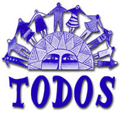

In 1991 at the AOTA Annual Conference in Cincinnati, Ohio the Hispanic Occupational Therapists of Illinois (HOTI) organized the first National Meeting of Hispanic Practicioners. Five people attended, Jaime Phillip Muñoz, Lesbia Acevedo-Navarro, Brian Gibbs, Jim Hinojosa and Beatriz Abreu. It was a humble beginning.
Muñoz and Acevedo-Navarro continued to push for the development of a national networking group of Hispanic/Latino practitioners and students. In 1992, at the AOTA Conference in Houston, Texas more than 50 practitioners and students responded to a call to meet and network. Members of HOTI and the Puerto Rico Occupational Therapy Association (PROTA) were instrumental in the success of this second meeting. A primary focus of the Houston meeting was encouraging the development of additional state organizations in different parts of the country. Shortly after, under the leadership of Anabel Rivera de Colón, the Southeastern Hispanic Occupational Therapy (SEHOT) network was formed in Florida. During the 1993 AOTA Conference in Seattle, the goal of the TODOS network was to find ways to strenghten our network and draft a mission statement. One method was to generate a TODOS Newsletter we called Adelante.
In 1994, at the Boston conference, we adopted the name TODOS, agreed on a mission statement, and outlined objectives for our network. TODOS continued to met each year at AOTA Conference. Additional issues of a newsletter, Adelante, were compiled and distributed under the guidance of Edna Mauras-Neslen. In 1997, under the leadership of Guillermo R. Cruz, Jr., a third state network, the Hispanic Occupational Therapists of New York (HOT-NY) was established. TODOS members continue to meet each year at AOTA conference.
En 1991 en la Conferencia Anual de AOTA en Cincinnati (Ohio), los Terapeutas Ocupacionales Hispanos de Illinois (HOTI), organizaron el primer Encuentro Nacional de Profesionales Hispanos. Cinco personas asistieron, Jaime Felipe Muñoz, Lesbia Acevedo-Navarro, Brian Gibbs, Jim Hinojosa y Beatriz Abreu. Fue un comienzo humilde.
Muñoz y Acevedo Navarro continuaron presionando para el desarrollo de un grupo de redes nacionales de profesionales hispano latinos y estudiantes. En 1992, en la Conferencia de AOTA en Houston (Texas), más de 50 profesionales y estudiantes respondieron a un llamado para conocerse e integrarse a la red. Los miembros de HOTI y la Asociación de Terapia Ocupacional de Puerto Rico (PROTA) jugaron un papel decisivo en el éxito de esta segunda reunión. Un objetivo principal de la reunión de Houston estaba alentando el desarrollo de organizaciones estatales adicionales en diferentes partes del país. Poco después, bajo la dirección de Anabel Rivera de Colón, se formó la red de Hispanos de Terapia Ocupacional del Sudeste (SEHOT) en Florida. Durante la Conferencia AOTA 1993 en Seattle, el objetivo de la red TODOS era encontrar maneras de fortalecer nuestra red y redactar una declaración de misión. Un método fue generar un Boletín de TODOS llamamos Adelante.
En 1994, en la conferencia de Boston, adoptamos el nombre de TODOS, de acuerdo a una declaración de misión, y delineamos objetivos para nuestra red. TODOS se continúan reuniendo cada año en las Conferencias de AOTA. Temas adicionales del boletín de noticias Adelante, fueron recopilados y distribuidos bajo la guía de Edna Mauras-Neslen. En 1997, bajo la dirección de Guillermo R. Cruz, Jr., fue establecido un tercio de la red estatal de los Terapeutas Ocupacionales Hispanos de Nueva York (HOT-NY). Los miembros de TODOS siguen cumpliendo cada año en la conferencia de AOTA. Si llegas a la próxima conferencia únete a nosotros! Si no puede asistir a la conferencia, únase a nosotros en línea aquí o en Facebook